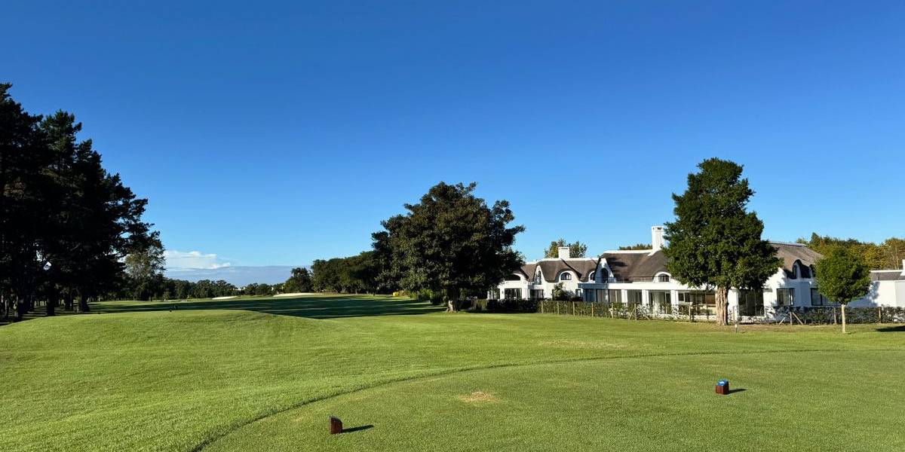

Présentation du club
Le Green Club est un club de golf de 18 trous situé en pleine nature. Il a été créé en 1987 et accueille aujourd'hui plus de 600 membres.
Que vous soyez débutant ou joueur confirmé, vous êtes le bienvenu ! Notre trou le plus connu est le 18e trou, juste devant le club-house.
Le club se trouve à 15 minutes du centre-ville, au milieu d'une forêt de pins. Le parcours est entouré d'étangs et de bruyères, ce qui en fait un endroit très calme pour jouer et se détendre loin du bruit de la ville.

Le club-house
Le club-house a été rénové en 2024. On y trouve l'accueil, les vestiaires, une petite boutique de matériel et un restaurant avec une grande terrasse qui donne directement sur le parcours. C'est l'endroit idéal pour boire un verre entre amis après une partie.